| 478 |
 |
Mafin in the series new opening ❤︎ |
January 16th, 2026 |
| 487 |
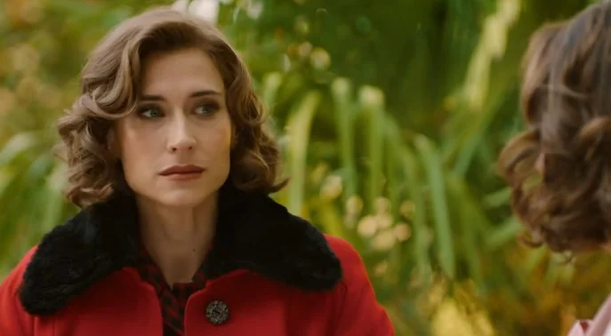 |
Marta tells Digna about her relationship with Cloe: "I haven't forgotten Fina" |
January 29th, 2026 |
| 487 |
 |
Marta tells Cloe that she told Digna about them: "because she loved Fina, Marta, but she hates me" |
January 29th, 2026 |
| 515 |
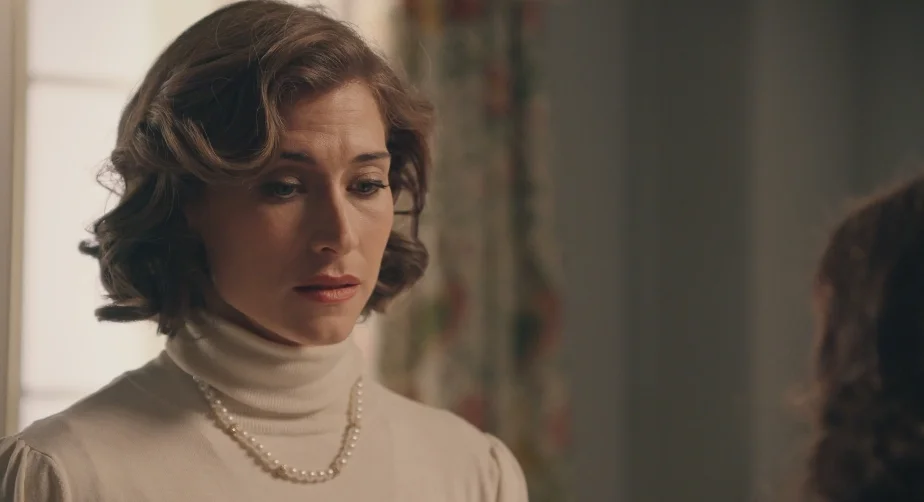 |
Marta mentions Fina while talking to Digna about her wedding |
March 10th, 2026 |
| 516 |
 |
Marta remembers Fina when Cloe tells her about her wedding |
March 11th, 2026 |
| 517 |
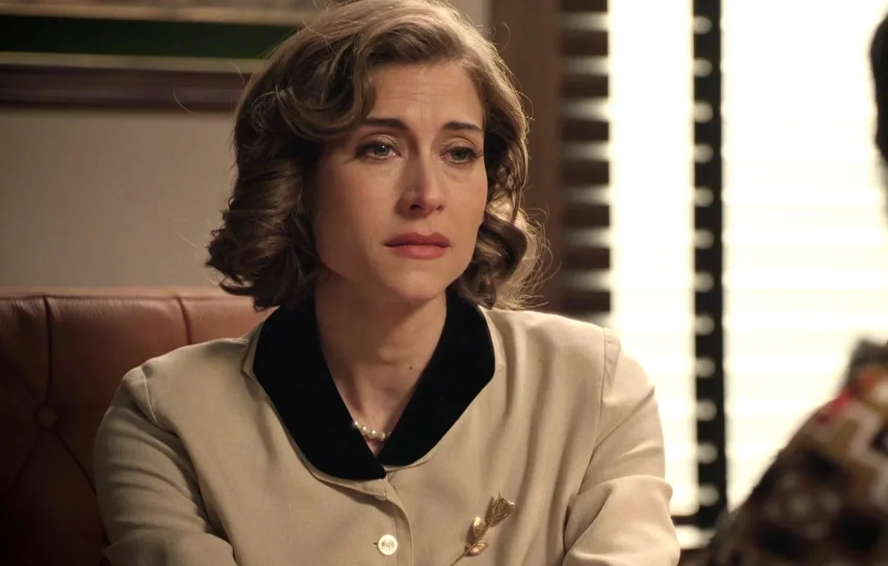 |
Marta is still in love with Fina and tells Cloe about her wedding night |
March 12th, 2026 |
| 521 |
 |
“I don't know if I can give you any more of myself knowing that Fina is somewhere in this world” |
March 18th, 2026 |
| 523 |
|
The memory of Fina is so vivid that it puts an end to Marta and Cloe's picnic |
March 20th, 2026 |
| 523 |
 |
Marta and Cloe come to a definitive end |
March 20th, 2026 |
| 524 |
 |
Marta turns to Andrés for comfort after the breakup |
March 23rd, 2026 |
| 532 |
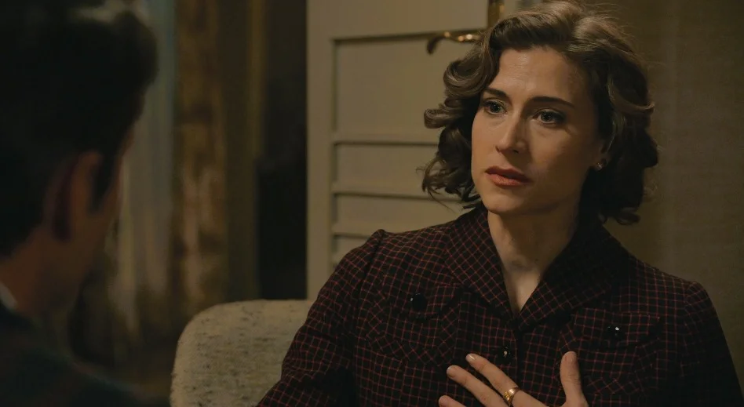 |
Pelayo is back, and Marta assures him that she hasn't forgotten Fina |
April 02nd, 2026 |
| 540 |
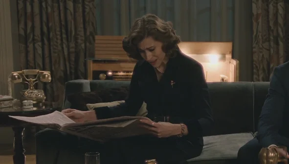 |
Marta recognizes Fina's initials in a Mexican newspaper and leaves her a message |
April 15th, 2026 |
| 542 |
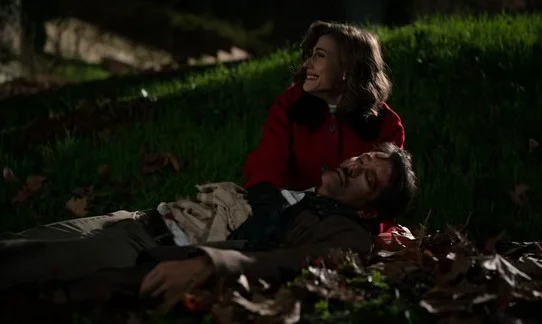 |
Pelayo dies in Marta's arms, apologizing |
April 17th, 2026 |
| 545 |
 |
Marta about destiny "The thread to pull to find her" |
April 22nd, 2026 |
| 546 |
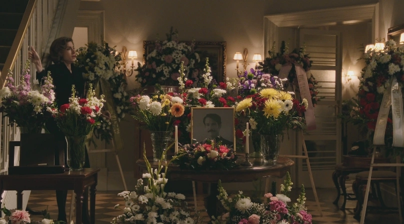 |
Darío tells Marta the whole truth about what Pelayo did |
April 23rd, 2026 |
| 547 |
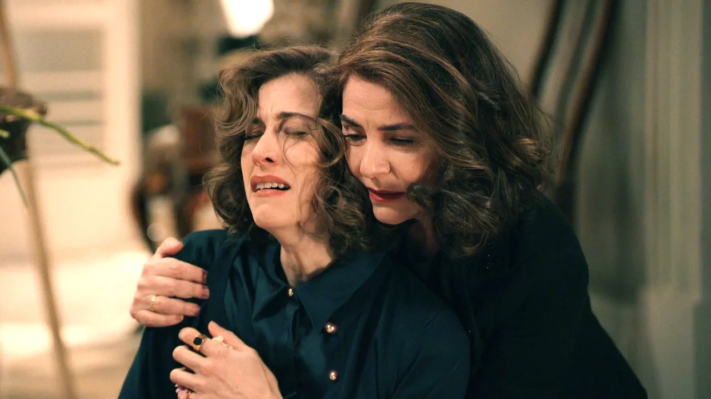 |
Marta's anger at Pelayo's altar upon learning the truth |
April 24th, 2026 |
| 547 |
 |
Pelayo's Funeral: "Go to Hell" |
April 24th, 2026 |
| 548 |
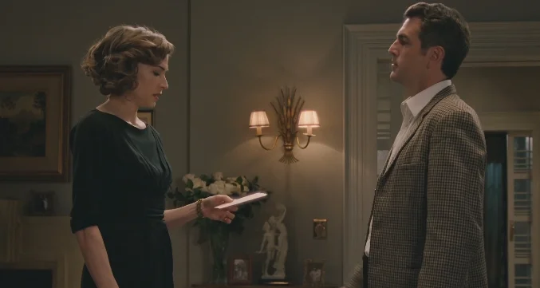 |
Darío assures Marta that he will help her find Fina through information |
April 27th, 2026 |
| 551 |
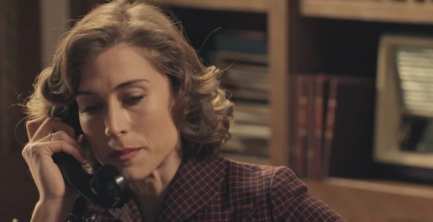 |
"I'd rather be obsessed than slip back into that apathy I fell into when Fina left" |
April 30th, 2026 |
| 552 |
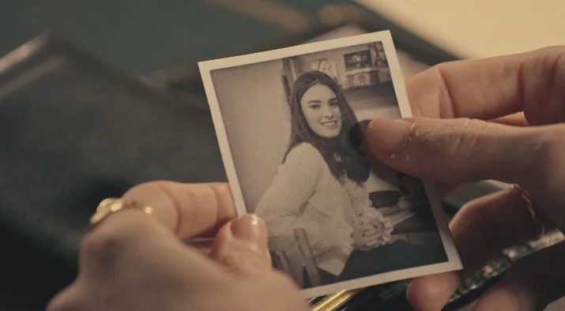 |
Marta writes a beautiful letter to Fina at her P.O. Box |
May 04th, 2026 |
| 553 |
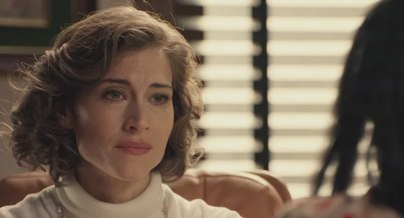 |
"If you and I broke up because I couldn't get Fina out of my head, just imagine how I feel now that I know she didn't leave of her own free will" |
May 05th, 2026 |
| 556 |
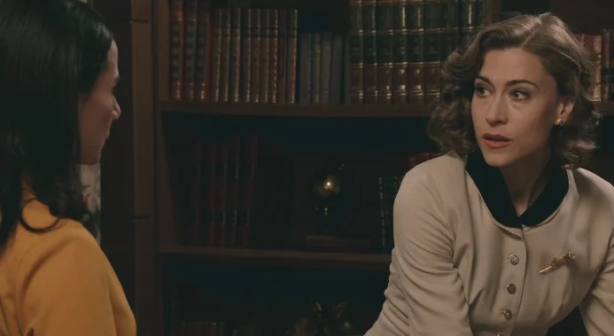 |
Cloe confesses to Marta the secret she's been hiding about Fina |
May 08th, 2026 |
| 556 |
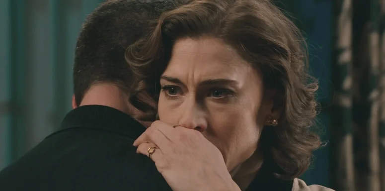 |
Marta calls the association in Rosario and finds out that Fina has been seriously sick |
May 08th, 2026 |
| 557 |
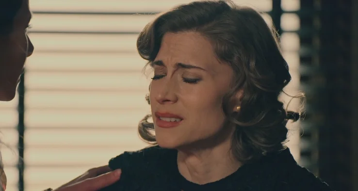 |
"I doubted her, I doubted our love... she might even be dead; I could never forgive myself for that" |
May 11th, 2026 |
| 559 |
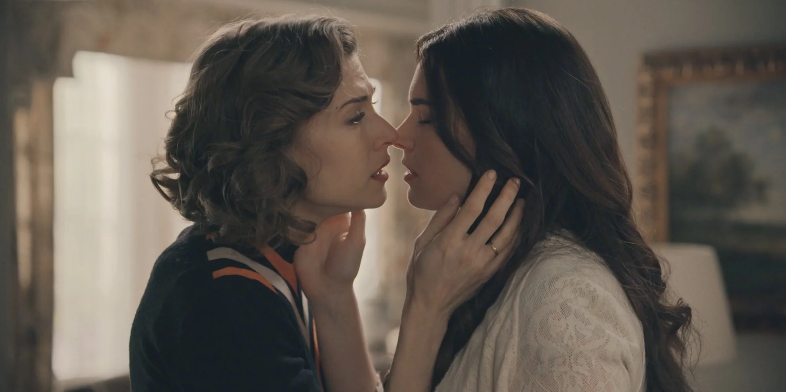 |
The nightmare |
May 13th, 2026 |
| 559 |
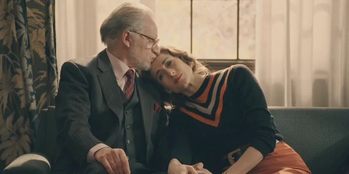 |
After her nightmare, Marta tells Damián that she'll go to Argentina to look for Fina |
May 13th, 2026 |
| 560 |
|
"Hello, Marta" |
Mayo 14th, 2026 |
| 561 |
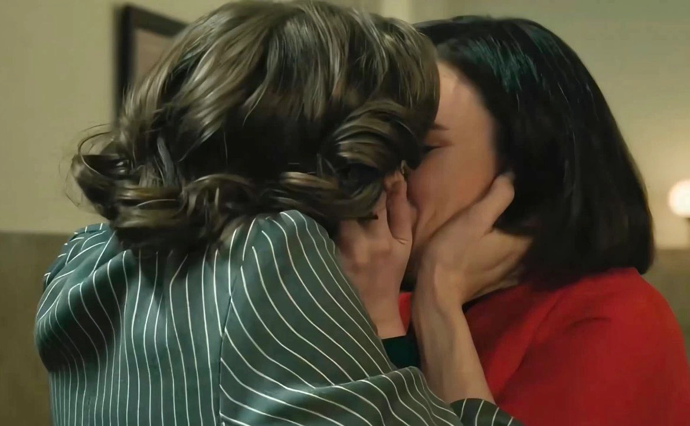 |
MAFIN Reunion ❤ |
Mayo 15th, 2026 |